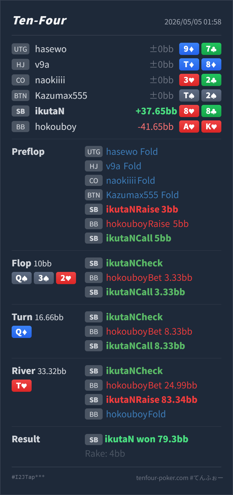

Preflop
良い88 はBvBでは十分強い pocket pair で、小さい3betにはほぼ必ず続行できます。
GTO基準では、preflop から turn call までは大きく問題ありません。river check-raise はかなり攻めすぎです。
8♥ 8♣A♥ K♥Q♠ 3♠ 2♥ / Q♦ / T♥88 のような showdown value ありの bluff-catcher は、相手のブラフを降ろすより、call で回収する方が自然です。5BB 3bet はかなり小さく、flop 1/3、turn 1/2、river 3/4 とサイズを上げる流れも solver 的にきれいな設計とは言いにくいです。ただしその読みは「相手がover-bluffしているかも」までで、88 の大レイズを標準化する根拠にはしません。8♥ 8♣A♥ K♥3BB, BB raise 5BB, SB Hero callQ♠ 3♠ 2♥ / Q♦ / T♥10BB, SB Hero check, BB bet 3.33BB, SB Hero call16.66BB, SB Hero check, BB bet 8.33BB, SB Hero call33.32BB, SB Hero check, BB bet 24.99BB, SB Hero raise 83.34BB, BB fold79.3BB, rake 4BB
良い88 はBvBでは十分強い pocket pair で、小さい3betにはほぼ必ず続行できます。
Q♠ 3♠ 2♥良い88 はQには負けますが、3/2より上の pocket pair で、AK系や一部のspade drawには勝っています。
Q♦許容88 は明確なvalueではなく bluff-catcher です。相手の小さい3betとスナップ気味のlineを加味すると、AK系のover-bluffも一定あります。
T♥raise は悪い / call は読み次第88 は相手のブラフには勝つ一方、valueの大半には負けます。しかも Qx/TT/AA/KK/Tx を強くブロックしていません。
| 論点 | その場で置いた見立て | どこがズレやすいか | 次回の基準 |
|---|---|---|---|
| river の check-raise | 相手のサイズが不自然で、ほぼスナップの3betもあり、強い手だけではなさそう。大きく返せば降ろせそう | その読み自体は有効です。ただし 88 は相手の AK/AJ/KJ などのブラフにすでに勝っています。raise して降ろしても call 勝ちと獲得額はほぼ同じで、call された時だけ損が大きくなります。 | 相手がブラフ多めなら、showdown value のある hand は call。raise は showdown value が薄く、相手の value をブロックする hand で使う |
| サイズ偏移の読み | 小さい3betから river だけ大きくなったので、river は弱い hand が混ざりやすい | 小さい3betはたしかにサイズリークですが、river 3/4 は Qx/overpair/TT の value も自然に含みます。サイズが変だから全部弱い、とは読まない方が安全です。 | サイズ崩れは「range が solver より汚い」サイン。まず call down を少し広げ、overpair や Tx まで降ろせる確証がある時だけ bluff raise を増やす |
| ストリート | その時点の見え方 | 実ハンドの位置づけ | 評価 | その場の一手 |
|---|---|---|---|---|
| Preflop | SB first-in の 3BB open は基準サイズです。BB vs SB は最も広い defend node で、BB は call も3betも厚く持てます。ただし 3BB open に対する 5BB 3bet はかなり小さく、SB に良い価格を与えています。 | 88 はBvBでは十分強い pocket pair で、小さい3betにはほぼ必ず続行できます。 | 良い | call で問題ありません。相手の3betが小さすぎるので、広くcallしてpostflopで実現します。 |
Flop Q♠ 3♠ 2♥ | BB は preflop 3bettor として AA/KK/AQ/KQ/AK を持てます。SB 側にも pocket pair、Qx、spade draw、low board に絡む hand が残ります。BB の 1/3 c-bet は広く打てるサイズです。 | 88 はQには負けますが、3/2より上の pocket pair で、AK系や一部のspade drawには勝っています。 | 良い | check-call が自然です。raise すると強いQxやoverpairにぶつかりやすく、callで十分です。 |
Turn Q♦ | board pair でQxのコンボは減りますが、BB の AA/KK/JJ/TT、Qx、spade draw、AK/AJ/KJ の barrel は残ります。1/2 pot はflopより強い圧ですが、まだ極端なpolar sizeではありません。 | 88 は明確なvalueではなく bluff-catcher です。相手の小さい3betとスナップ気味のlineを加味すると、AK系のover-bluffも一定あります。 | 許容 | call は成立します。相手が標準的でturn以降がかなりvalue寄りなら、ここからfoldも候補に入ります。 |
River T♥ | T でBBの TT/Tx が改善し、AA/KK/JJ/Qx もまだ残ります。一方で AK/AJ/KJ、missed spade などのブラフも残ります。BB の 3/4 pot はかなりpolar寄りです。 | 88 は相手のブラフには勝つ一方、valueの大半には負けます。しかも Qx/TT/AA/KK/Tx を強くブロックしていません。 | raise は悪い / call は読み次第 | サイズ崩れとタイミング読みを信じるなら check-call が第一候補です。check-raise は、相手が overpair や Tx まで大きく降りる確証がある時だけに寄せます。 |
5BB 3bet はかなり小さいので、SB は 88 を安心して続行できます。ここは良いです。88 は river で相手のAK系ブラフに勝っています。ブラフが多い読みなら、raise で降ろすより call で取ります。Qx/Tx/overpair 方面を少しでもブロックする hand を優先します。中位 pocket pair は主に bluff-catch 側です。A♥K♥ で、かなり小さい3betから3発打っています。アクションが速かった点も合わせると、big-card を自動的に押し切るタイプの可能性はあります。88 は標準より call 寄りにしてよいです。ただし check-raise で降ろした相手の AK は、call しても勝っていた hand です。次回同じ読みを使うなら、まず bluff-catch の精度を上げる方が利益に直結します。